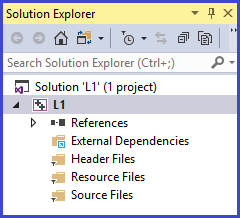
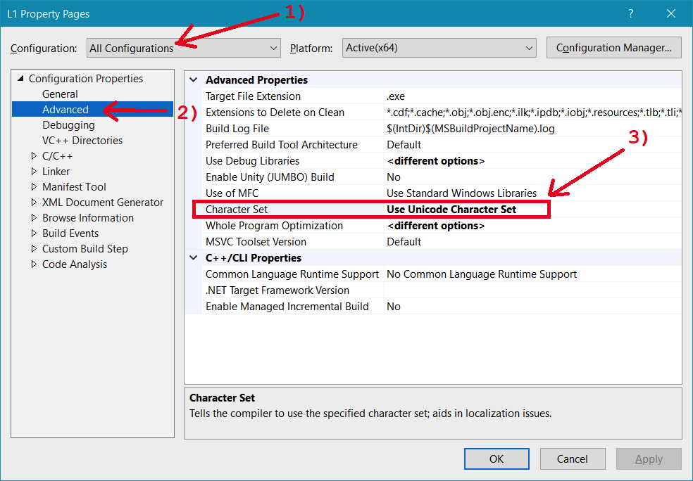
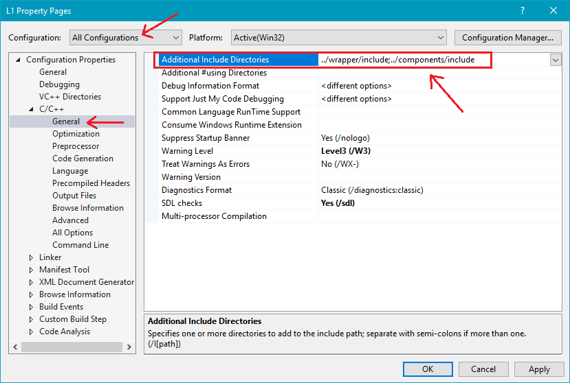
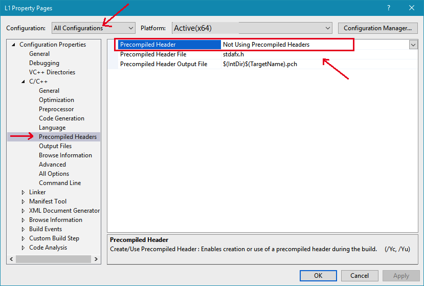

Each time a new project is created, you must change its specific settings. You only need to do this once for each project you create. Failure to successfully change the settings will usually cause millions of compiler errors to be generated.
To change a project's settings, do the following:
| From Visual Studio Solution Explorer, with your project open, right click L1 (or LX, depending on the project - See the screen shot to the right) and from the context menu choose Properties, this will cause the "Property Pages" dialog to appear. |  |
|
From the Property Pages dialog make the following 3 changes Be sure to click "Apply" after each change, then click "OK" when finished 
Note: for the following two changes, the C/C++ subgroup will not appear under Configuration Properties (on the left hand navigation pane) until after you have added at least 1 .cpp file to your project's Source Files folder   |
|